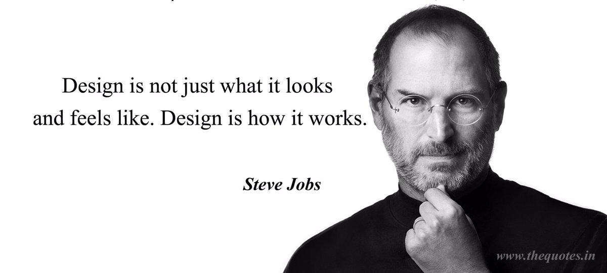

Streve jobs
1985-2011
Biography
Steve Jobs was an American entrepreneur and business magnate widely recognized as a co-founder of Apple Inc. He
was born on February 24, 1955, in San Francisco, California, and passed away on October 5, 2011.
Jobs began his career in the tech industry during the 1970s when he co-founded Apple Computer, later known as
Apple Inc., along with Steve Wozniak and Ronald Wayne. Apple's early success came with the release of the Apple
II, a personal computer that became popular in the late 1970s.
However, internal conflicts led to Jobs being ousted from Apple in 1985. Undeterred, he founded NeXT Computer
Inc., a computer company focused on high-end workstations. NeXT struggled in the market but eventually caught
the attention of Apple, which acquired the company in 1997, bringing Jobs back into the fold.
Upon his return to Apple, Jobs revitalized the company's product lineup and introduced groundbreaking
innovations. Under his leadership, Apple launched a series of iconic products, including the iMac, iPod, iPhone,
and iPad. These devices revolutionized the consumer electronics industry and cemented Apple's reputation as a
leading technology company.
Jobs was known for his attention to design and user experience, emphasizing simplicity and elegance in Apple's
products. His visionary approach and ability to anticipate consumer needs played a significant role in Apple's
success.
Apart from his contributions to Apple, Jobs also played a crucial role in the development of animated movies
through his ownership of Pixar Animation Studios. The studio produced several critically acclaimed films,
including "Toy Story," "Finding Nemo," and "The Incredibles."
Steve Jobs was renowned for his charismatic personality, demanding leadership style, and emphasis on perfection.
He was known for his captivating presentations and memorable product launches, which became widely imitated in
the tech industry.
Jobs faced health issues in later years, and he ultimately succumbed to pancreatic cancer in 2011 at the age of
56. His legacy continues to resonate in the technology world, and he is remembered as one of the most
influential figures in modern history.